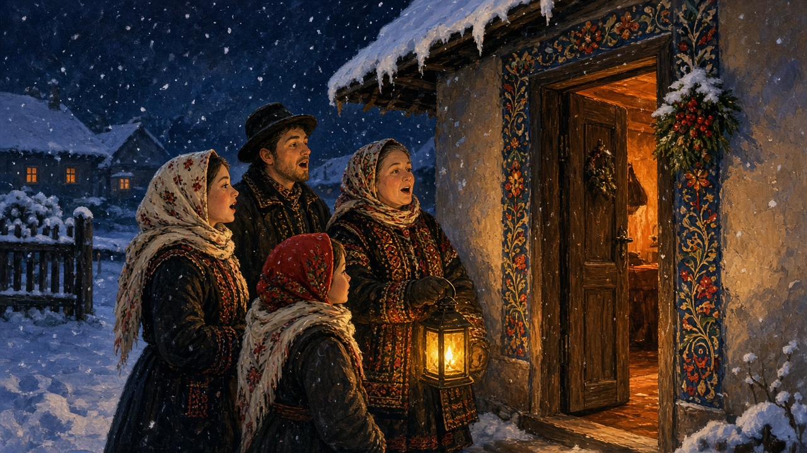

Colinde
Not a concert. The carols that still walk to the door in the dark week around Crăciun, and the house that opens for them.

House to house
Colindători stop at the gate or the door and sing. The household that still keeps the custom does not leave them on the step. A glass, a piece of cake or a colac, coins, nuts, an apple — whatever the table can spare after the fast. Children come in a small pack, a parent a few yards behind. In some villages a company of young men still walks the street as a set that knows which yards will open. Town blocks hear less of this. The year page already said the true thing: they still walk some streets.
Steaua, and the plough
A few visits have names. Steaua is the children’s one: a paper or foil star on a stick — the Star of Bethlehem — and a short carol about it. You hear it in stairwells as much as in yards. Around New Year, Sfântul Vasile, some places keep Plugul, the plough carol: a small plough, or the words of one, and a wish for the house and the field. That date sits on winter on the year. This page does not list every regional variant. It only names the two a guest is likely to be told.
The table that opens
Christmas ends the Nativity fast. The table that has been holding back meat opens again: pork if a pig was killed for Ignat, cabbage, cozonac if the dough rose, and what autumn put in jars. Carolers arrive into that, not into a concert hall. The room that holds the table is on the house. How the cold around it is lived — the yard, the woodpile, the stove — is on winter. The feast dates are on the year. The knock is this page.
Church night, street night
The liturgy is one singing. The door is another. Belief, the Nativity fast, and why Christmas may not fall on the Western date sit on Orthodoxy. The music page is the hora, the sârba, and the doină — wedding and Sunday sound. Colinde are not those. They are a visit. School concerts and television made a stage version; apartment intercoms made a quieter street. Some houses still wait for the knock. You do not need a catalog of verses. You need the habit of asking whether this street still opens, or only plays a recording from the kitchen.